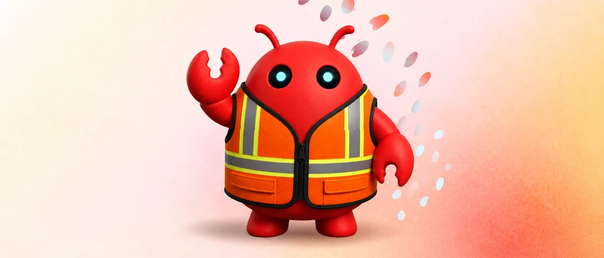
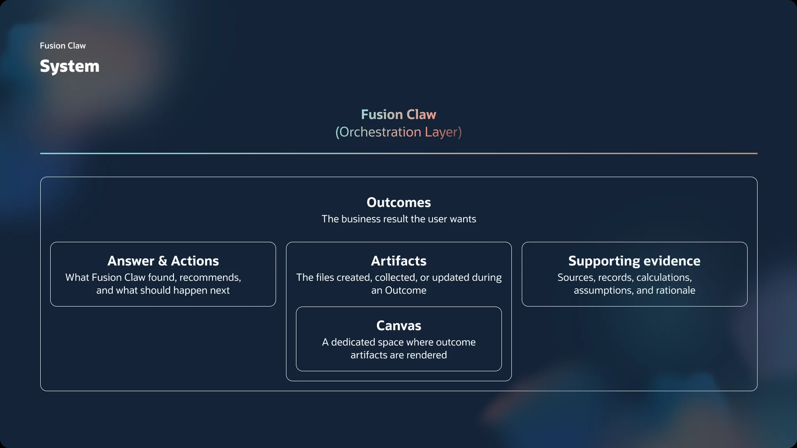

Fusion Claw: Outcome Framework
AI agents now finish whole tasks and hand back a result. I designed the framework that makes every result clear, consistent, and on brand, whichever agent produced it.

The problem
An agent can now be handed a task and come back with a finished result: an analysis, a briefing, a deck. But when the model decides both what the answer says and how it looks, the same question gets a table one time and paragraphs the next, key numbers get buried, and colors and type drift off brand.
For customers who forward these results to their own leadership, “usually right” is not good enough.
- Inconsistent structure. Users could not predict where the answer or the key number would be.
- Brand and accessibility drift. Output did not reliably look like Oracle or meet accessibility rules.
- No shared standard. Each agent team solved layout on its own.
The solution
The agent declares intent. The product owns rendering. The model says what kind of answer this is and what each piece means. A governed layer turns that into the right Redwood components.
A common structure
Every outcome leads with the answer, with evidence below and clear rules for which component fits which content. I wrote these as prompt skills.
One visual standard, for models
I translated Redwood’s tokens, type, spacing and accessibility rules into skills for pages, decks, documents and charts, including customer-branded decks.
Design to runtime
As design engineer, I turned the design system into what the app actually runs: the model declares intent, and a governed layer renders it.
Rules enforced in code
Known components use widget JSON checked against a schema and lint gates, so consistency does not depend on the model behaving.
The system
Fusion Claw is the orchestration layer. Every Outcome, the business result a user wants, is built from three parts:

- Answer and actions. What Fusion Claw found, recommends, and what should happen next.
- Artifacts. The files created, collected or updated during an Outcome, rendered in a dedicated Canvas.
- Supporting evidence. Sources, records, calculations, assumptions and rationale.
In the product


Impact
- Live across Fusion Agentic Applications for HCM, ERP, CX, and SCM.
- Results are structurally consistent whichever agent produced them.
- Redwood brand and accessibility rules carry into every output format.
Teams building on this work


What I learned
Governing AI output is a systems design problem, not a documentation problem. For every rule, the real decision is where it lives: in the prompt, the schema, or the code.
Announced by Oracle
Note. Much of this work is under NDA, so I share more in interviews. Parts of it will be shown publicly at Oracle AI World.